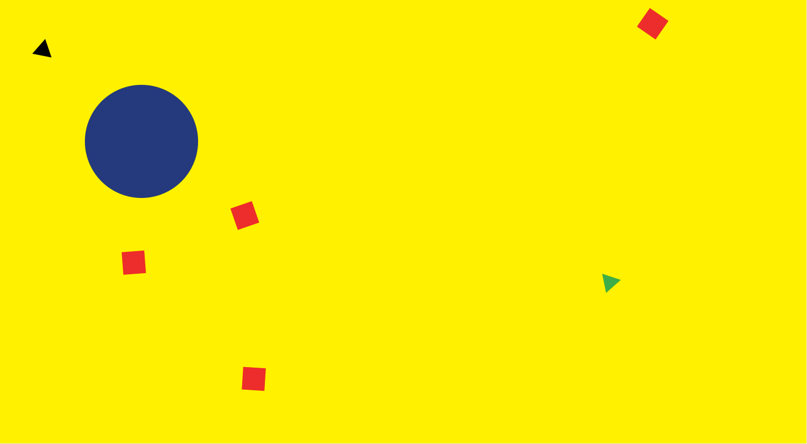
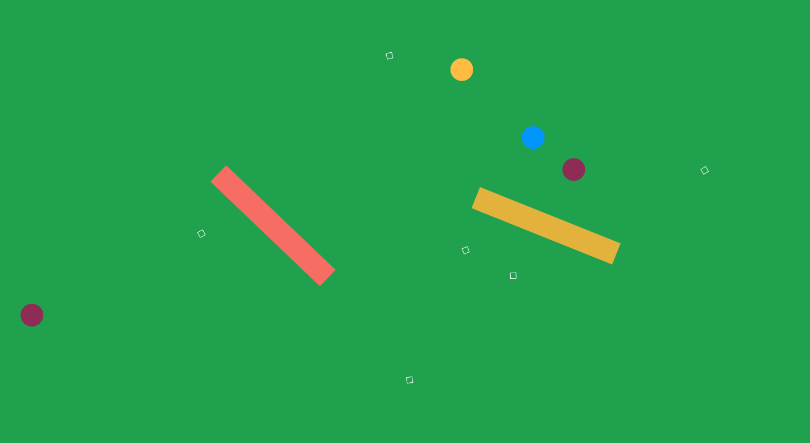
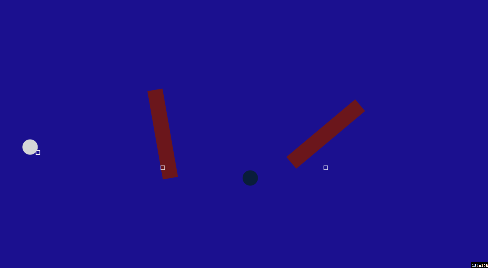
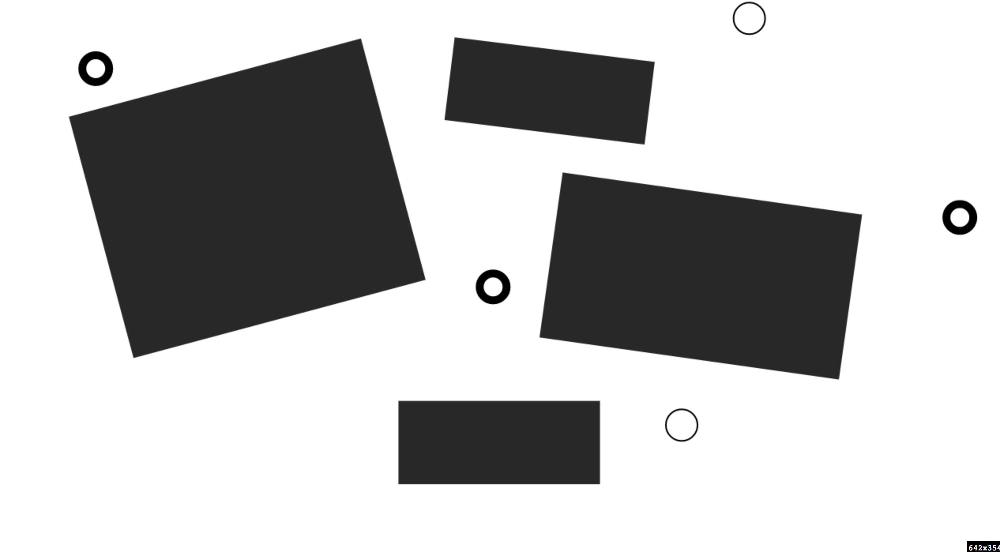
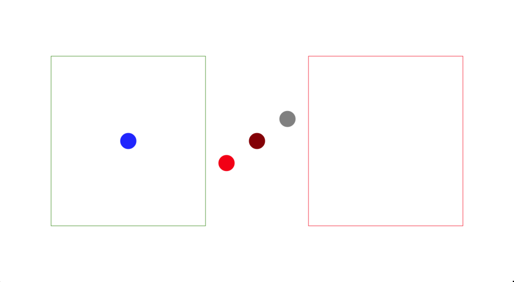
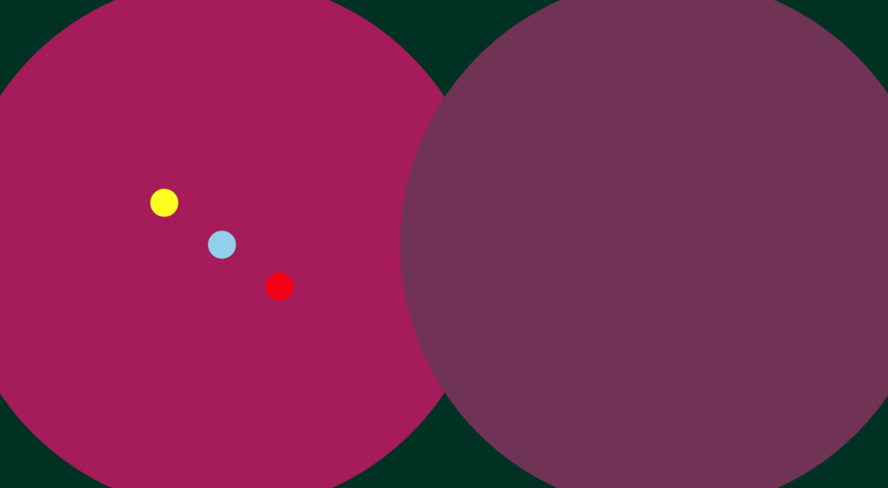
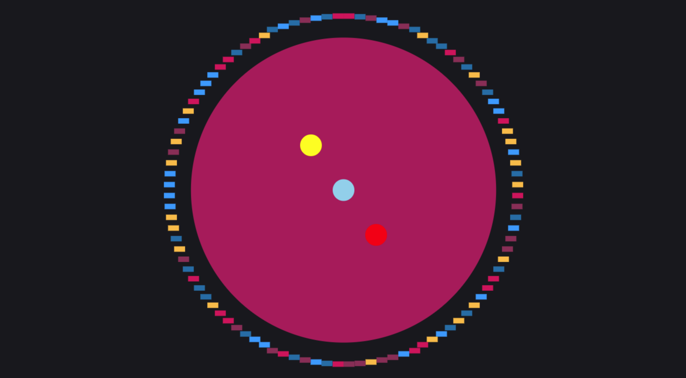
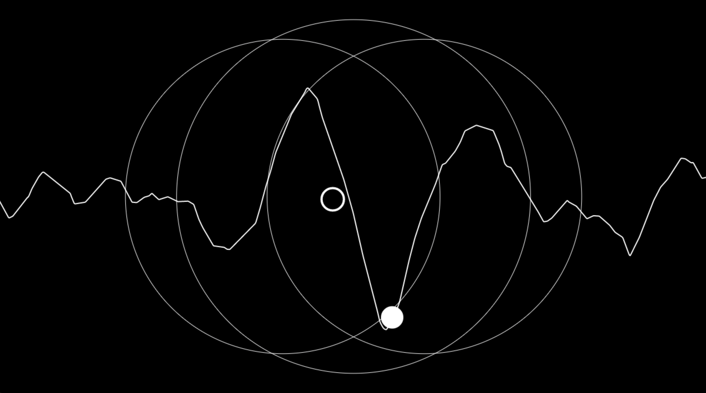
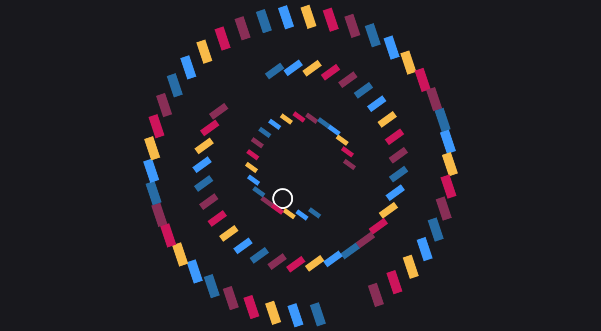

metaesquema 01
elementos ressonantes

metaesquema 02
barras constantes
sensores

metaesquema 03
elementos sintéticos
notas e efeitos randômicos
metaesquema 03.1
elementos sintéticos
notas e efeitos randômicos
metaesquema 03.2
elementos sintéticos
notas e efeitos randômicos

metaesquema 04
geometria
lançamento controlado
metaesquema 04.1
geometria
lançamento controlado

metaesquema 05
microfones com reverb
samples

metaesquema 06
microfones de volume
sons constantes

metaesquema 06.1
círculo
sons constantes

metaesquema 06.2
microfones
representação de ondas
tremolo e vibrato
perturbação

metaesquema 07
círculos
rotação
piano